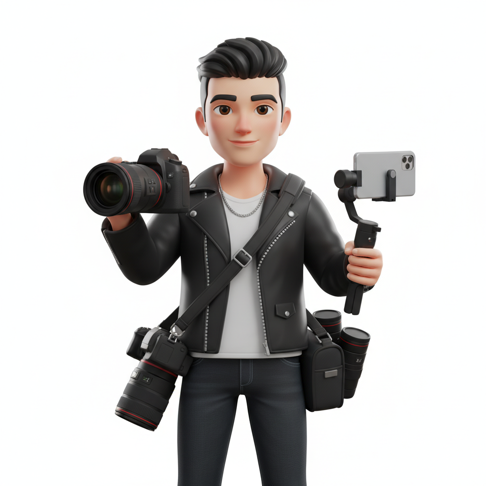

Saya Seorang
Halo! Nama saya ZLEN
Saya adalah seorang multi-talenta dengan pengalaman sejak tahun 2017
Pada keahlian videography, saya mahir dalam pengambilan gambar dan editing
Sementara pada keahlian IT, saya menguasai pengembangan website yang user-friendly dan fungsional.
Skill
Technical
Kemampuan dalam operasional dan produksi
Videography
Photography
Editing
Drone Operation
IT
Software
Penguasaan perangkat lunak untuk menghasilkan hasil akhir
Adobe After Effect
Photoshop
Premiere Pro
DCP Mastering
Davinci Resolve
Capcut
Work Experience
2019 - 2025
Full Time Editor, Audio 5.1, DCP Mastering, & IT
PT. LANGIT 7 SINEMA
-
2020 - 2025 Kepala Editor Video
- Memimpin dan mengelola tim editor video (termasuk editor junior/senior)
untuk memastikan kualitas dan konsistensi output video di seluruh project. - Berkoordinasi erat dengan Sutradara/Produser - Executive untuk memahami visi kreatif dan tujuan project,
lalu menerjemahkannya menjadi strategi kedalam teknik editing. - Mengawasi dan menyetujui semua tahapan post-production. 2019 - 2020 Editor Video
- Menyusun footage mentah menjadi visual yang menarik, mempertahankan ritme
dan alur cerita yang sesuai naskah atau sesuai keinginan sutradara. - Memperbaiki dan menyelaraskan warna serta pencahayaan antar adegan (color correction)
dan memberikan tampilan gaya sinematik yang diinginkan (colorgrading). - Meningkatkan kualitas audio, membersihkan kebisingan, dan menambahkan efek suara
yang relevan untuk memperkaya pengalaman menonton. - Mengintegrasikan teks, animasi, efek visual (VFX), dan motion graphics ke dalam video (jika diperlukan).
10 - 20 September 2025
Freelance Videographer & Editor
Client : GM Group Mobil & Tractors
- Melakukan pengambilan video saat events pameran mobil & tractors serta kegiatan lainnya.
- Mengolah footage untuk di editing Sequencing, Cutting, Transition, Audio Mixing
sehingga menjadi video yang informatif serta menarik.
17 Februari 2025
Freelance IT - Developement Website
POMMINI ID
- Membuat website online shop dari mulai merancang layout, design, dan pengcodingan
sehingga website berfungsi secara keseluruhan. - Bahasa coding terdiri dari HTML (struktur), CSS (gaya/tampilan), dan JavaScript (interaktivitas/fungsionalitas).
- Memastikan responsivitas website (bekerja baik di berbagai ukuran layar: desktop, tablet, mobile).
- Melakukan SEO (Search Engine Optimization) pada website
agar terindex secara organik pada hasil pencarian di mesin pencari seperti Google & Bing.
18 Januari 2025
Freelance Drone, Camera Underwater, Loader File
Client : Mr. Ali - THE MEDIA SINGAPORE
- Melakukan pengambilan video dengan Drone di laut
- Meloader footage sesuai scene/take/day dalam folder dan memastikan kelancaran alur kerja media record.
Serta melakukan memuat dan mengosongkan kartu memori (SD cards, CFast, dll.) dari kamera.
Pencatatan Data ("Data Wrangling"): bertanggung jawab untuk mentransfer footage dan mem-backup footage
ke hard drive eksternal, untuk mencegah kehilangan atau kerusakan data yang fatal.
03 November 2024
Freelance Videographer & Editor
Client : Bea Cukai Bekasi
- Melakukan pengambilan video saat events JAPRI (Jangan Pakai Rokok Ilegal)
- Mengolah footage untuk di editing Sequencing, Cutting, Transition, Colorgrading Audio Mixing
sehingga menjadi video yang informatif serta menarik.
14 Agustus 2022
Freelance Audio Visual
Client : Padepokan Dakwah Sunan Kalijaga
- Membuat dan mempersiapkan materi visual motion graphic looping untuk screen backdrop
- Melakukan management audio seperti mikrofon, instrumen musik, terhubung dengan benar ke mixer.
Sehingga mendapatkan output yang optimal ke sistem pengeras suara seperti speaker,
monitor panggung, device record, atau live streaming.
4 Agustus 2021 - 8 September 2021
Freelance Editor Profil Desa
Client : Pemerintahan KADES Kab. Garut
- Mengedit footage Cutting, Transition, Motion Graphic, Colorgrading Audio Mixing
agar menjadi sebuah video data laporan.
22 April 2021
Freelance Editor Video
Client : PT. AGROBEN INDONESIA
- Mengedit footage VFX, Cutting, Colorgrading.
10 Mei 2021 - 2 Februari 2022
Per'project Videographer & Editor
Client : CINEMATOGRAPHY GARUT
- Mengembangkan konsep, storyboard, dan shot list.
- Memastikan semua peralatan (kamera, lensa, pencahayaan, audio) siap dan berfungsi.
- Mengoperasikan kamera untuk take video.
- Mengatur pencahayaan dan komposisi gambar secara efektif.
- Memastikan kualitas audio yang direkam sudah baik.
- Mengarahkan talent sesuai kebutuhan skenario/konsep.
- Melakukan pengeditan video sesuai naskah/Sutradara, seperti Cutting, Audio Mixing,
Transition, Motion Graphic, Colorgrading, Export dalam format dan resolusi yang sesuai.
2017
Magang
INEWS TV Bandung
- Melakukan pengeditan footage sesuai roundown sehingga menjadi sebuah tayangan informatif dan menarik.
- Memastikan bahwa semua elemen audio dan visual memenuhi standar penyiaran
(resolusi, frame rate, color space, dan tingkat suara standar loudness).